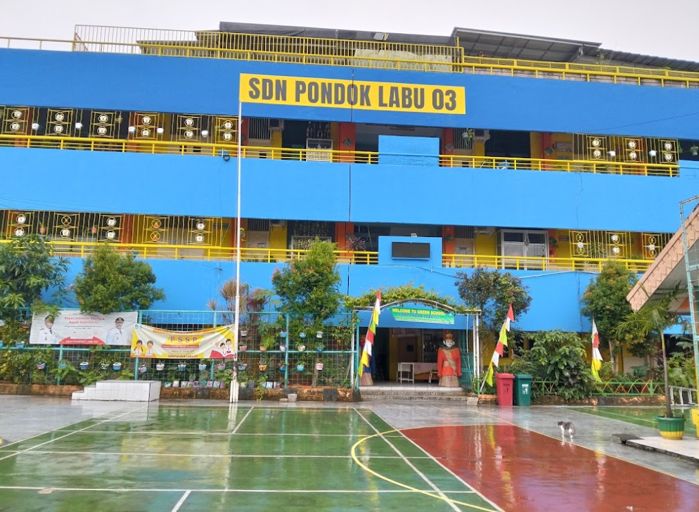
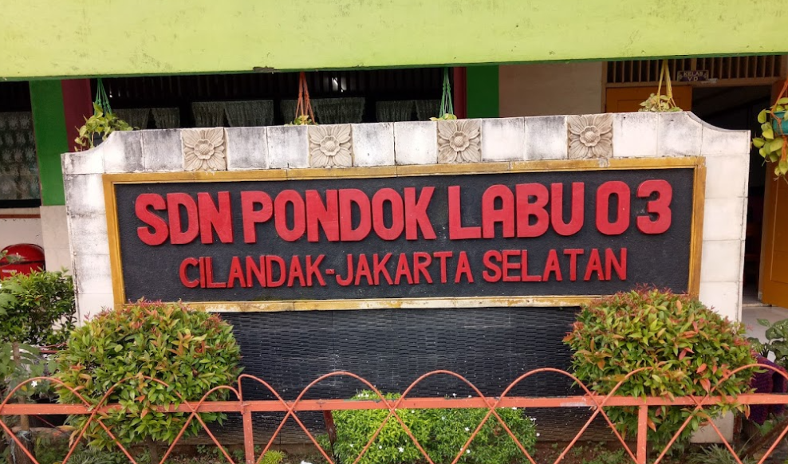
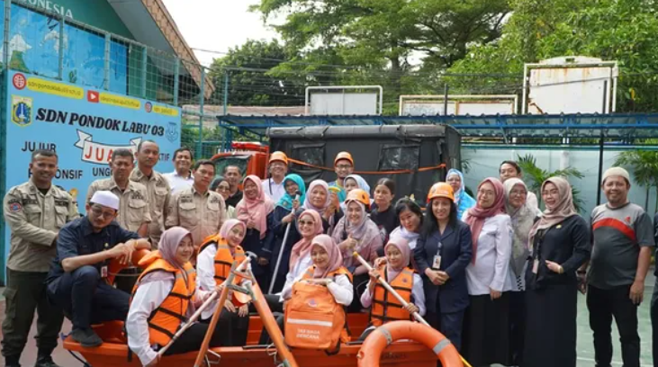
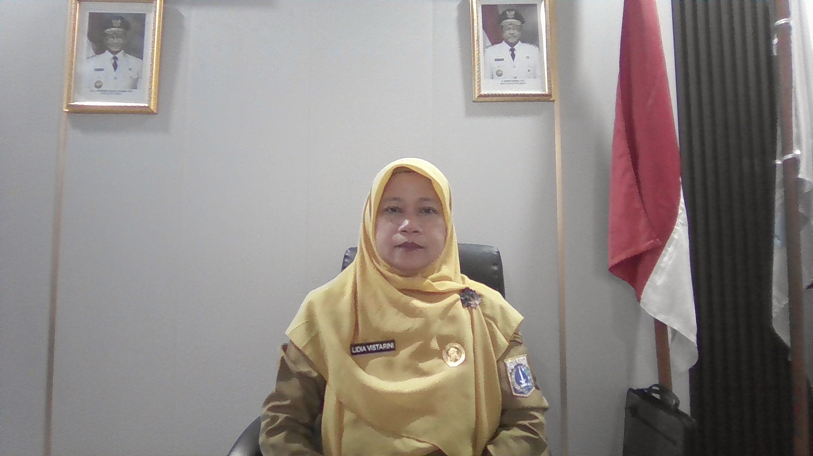

Selamat Datang Di SD Negeri Pondok Labu 03





Kepala Sekolah
Lidia Vistarini
Visi
Terwujudnya generasi pembelajar yang berkarakter, sehat dan berwawasan lingkungan.
Misi
- Menanamkan nilai-nilai karakter seperti kejujuran, tanggung jawab, disiplin, dan toleransi dalam seluruh aktivitas pembelajaran dan kehidupan sekolah.
- Meningkatkan kualitas pembelajaran yang aktif, kreatif, dan menyenangkan untuk membentuk peserta didik yang cerdas dan mandiri.
- Membangun budaya literasi dan numerasi yang kuat sebagai dasar pembentukan pembelajar sepanjang hayat.
Terwujudnya generasi pembelajar yang berkarakter, sehat dan berwawasan lingkungan.
- Menanamkan nilai-nilai karakter seperti kejujuran, tanggung jawab, disiplin, dan toleransi dalam seluruh aktivitas pembelajaran dan kehidupan sekolah.
- Meningkatkan kualitas pembelajaran yang aktif, kreatif, dan menyenangkan untuk membentuk peserta didik yang cerdas dan mandiri.
- Membangun budaya literasi dan numerasi yang kuat sebagai dasar pembentukan pembelajar sepanjang hayat.
- Mendorong gaya hidup sehat melalui kegiatan olahraga, pola hidup bersih, dan layanan kesehatan sekolah yang terintegrasi.
- Mengembangkan kepedulian dan kesadaran lingkungan melalui pembiasaan, program cinta lingkungan, dan pengelolaan sekolah berbasis ekoliterasi.
- Meningkatkan peran serta orang tua dan masyarakat dalam mendukung program-program pendidikan dan pembentukan karakter peserta didik.
0
Tenaga Pendidik
0
Prestasi
0
Siswa Aktif
0
Ekstrakurikuler
Galeri Kegiatan
Galeri Kegiatan SDN PONDOK LABU 03


Lokasi Sekolah
SDN Pondok Labu 03 Jakarta Selatan